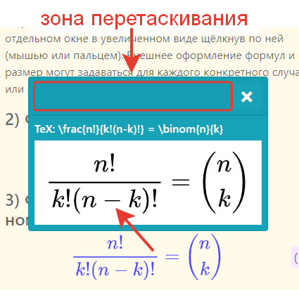

1) Чтобы раскрыть/свернуть формулу в увеличенном виде: щёлкните по ней мышью (или пальцем). Окно с формулой можно перемещать по экрану используя его заголовок.
2) Формулы с дополнительным комментарием имеют впереди значок . Щёлкните по нему чтобы показать/скрыть комментарий.
1) Формула внутри текста
Для записи формул в исходной разметке страниц виртуальных учебников используется текстовый формат TeX, а их непосредственный рендеринг (отображение) осуществляется средствами программной библиотеки MathJax. Формулы могут быть встроены в текст, н-р: k_{n+1} = n^2 + k_n^2 - k_{n-1}, а могут отображаться отдельными блоками (как показано далее).
Дополнительно формулы могут оснащаться всплывающими комментариями и нумероваться. Любую формулу можно открыть в отдельном окне в увеличенном виде щёлкнув по ней (мышью или пальцем). Внешнее оформление формул и их размер могут задаваться для каждого конкретного случая, или целиком для всей страницы.
2) Формула отдельным блоком
3) Формула отдельным блоком с номером
4) Формула с дополнительным комментарием
Дополнительными всплывающими комментариями могут также оснащаться формулы f(n) = n^5 + 4n^2 + 2 |_{n=17} находящиеся внутри текста.